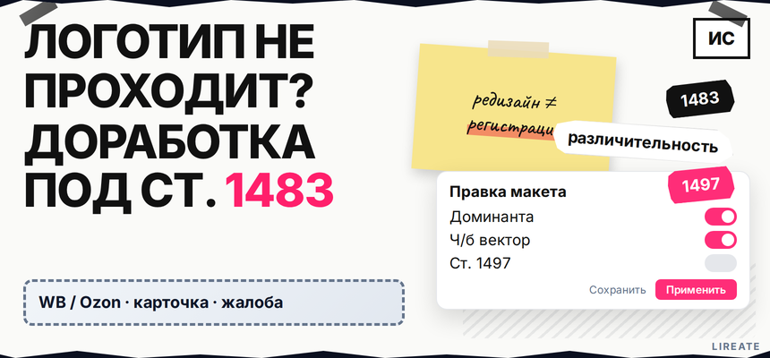
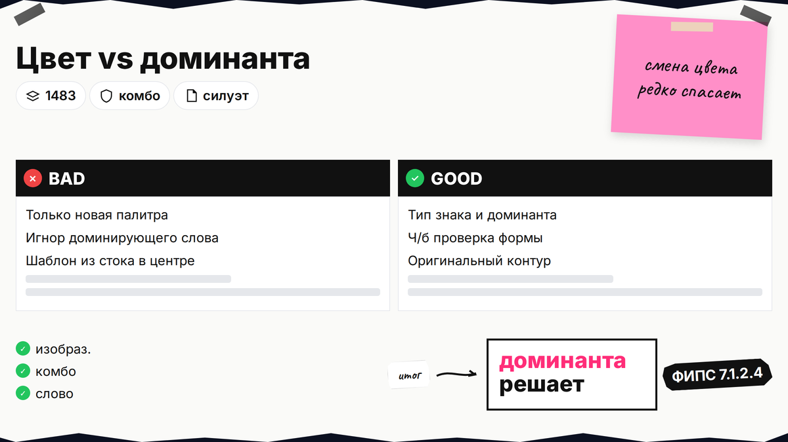
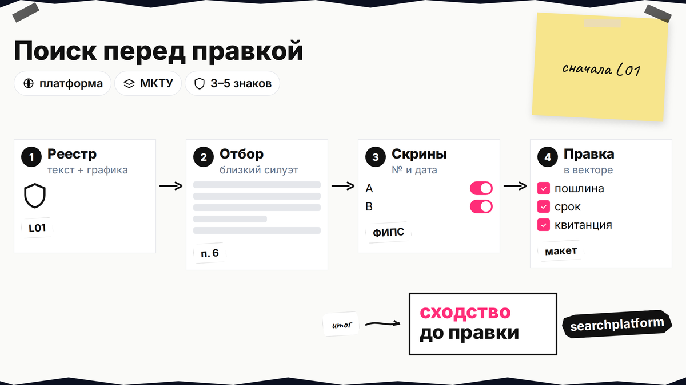
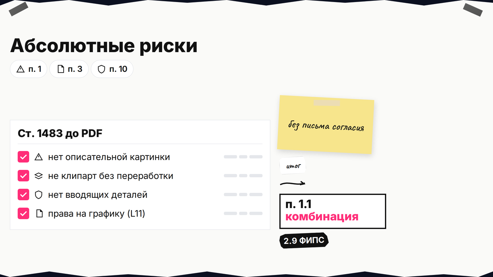
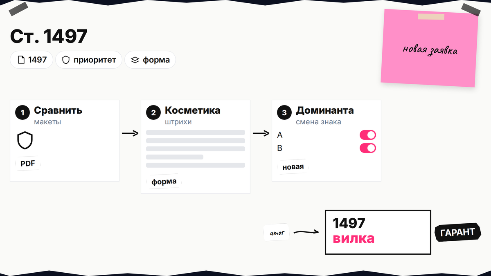

Общие приёмы доработки знака до подачи описаны в материале о доработке товарного знака и логотипа; здесь - практический чек-лист перед PDF в кабинете Роспатента. Логотип уже на упаковке и в соцсетях, а в уведомлении - слабая графика, описательность или сходство с чужим знаком. Доработка логотипа перед регистрацией товарного знака - правка макета под ст. 1483 ГК РФ и методику ФИПС, а не "подкрутить цвет". Ниже - что менять в файле, когда хватит уточнения по ст. 1497, а когда нужна новая заявка. Вы пройдёте чек-лист до PDF в кабинете: сначала реестры, затем графику.

TL;DR / Быстрый инсайт: Различительная способность - когда знак не путают с чужим; шаблон и описательная картинка её не дают (п. 1 ст. 1483). Экспертиза смотрит первое впечатление (Руководство 7.1.2.2) и доминирующий элемент (7.1.2.4). Существенная смена макета в заявке = новая подача (ст. 1497). После уведомления ответ - 6 месяцев с даты направления (ст. 1499); см. ответ экспертизе при отказе.
Материал для владельца бренда и маркетолога. Нормы сверены на 09.11.2026; это не индивидуальная юридическая консультация. МКТУ - классы товаров и услуг в заявке. Неохраняемые элементы - слова или картинки, которые описывают товар, их могут включить в знак, но не дадут монополию на эту часть.

Логотип в заявке может быть изобразительным (только рисунок), комбинированным (слово + графика) или словесным с особым шрифтом. Экспертиза смотрит на то, что покупатель запоминает первым.
Делайте: готовить вектор и вариант в ч/б до подачи. Не делайте: надеяться, что мелкая правка спасёт знак, если доминирует шаблон из стока - по п. 10 ст. 1483 без согласия правообладателя графики риск остаётся.

Сначала чек-лист проверки перед подачей и карточки на Поисковой платформе; отберите 3–5 знаков с близким силуэтом в ваших классах МКТУ и сохраните скрины с номерами.
Делайте: сравнивать знаки в однородных товарах (п. 6 ст. 1483). Не делайте: править только цвет, если сходство держится на силуэте и словесной части.

Абсолютные основания отказа не лечатся письмом согласия: макет либо дорабатывают, либо меняют концепцию, либо собирают доказательства приобретённой различительности (Руководство ФИПС, 2.9).
Делайте: выносить описательные слова в мелкий неохраняемый ряд, если они не доминируют. Не делайте: оставлять крупным центром слово, которое прямо называет товар.
| Типичный мотив | Что менять в макете | Чего обычно недостаточно |
|---|---|---|
| Нет различительности (п. 1) | Оригинальный символ, асимметрия, фантазийная графика букв | Смена оттенка у шаблонной иконки |
| Описательный элемент | Уменьшить долю, вынести в неохраняемую подпись, усилить охраняемый рисунок | Переставить то же слово в другой угол |
| Сходство до смешения (п. 6) | Силуэт, композиция, сочетание цветов; для комбо - переработать словесную часть | Только палитра при том же слове и форме |
| Чужая графика (п. 10) | Новая авторская отрисовка, шрифт с лицензией, договор с дизайнером | Фильтр "винтаж" поверх стока |
| Слабый, но узнаваемый бренд | Документы об использовании к дате приоритета (2.9 Руководства) | Минимальный редизайн без доказательств |
Редизайн не гарантирует регистрацию; при п. 6 смотрите ответ экспертизе при отказе.
Методика ФИПС для изобразительных знаков смотрит первое впечатление сходства с расстояния вывески. Практическая доработка логотипа под требования Роспатента - менять то, что считывается за секунду.
Делайте: смотреть макет в размере аватара и favicon. Не делайте: копировать чужую схему с "другими" деталями - сходство по п. 6 часто останется.
Схема до заявки:
Поиск в реестрах → чек-лист п. 1–3 ст. 1483 → правки в векторе → ч/б и цветовой вариант → описание в заявке → договор с дизайнером → PDF/форматы по кабинету online.rospatent.gov.ru
Дополнительные приёмы - в legacy-гайде на сайте; подача - в материале о самостоятельной регистрации ТЗ.

По п. 2 ст. 1497 существенную смену не примут - нужна новая заявка. Косметика (линии, мелкий текст) - через кабинет online.rospatent.gov.ru; критерий существенности решает экспертиза (ГАРАНТ).
Делайте: до правки в заявке сравнить старый и новый макет попиксельно и словами. Не делайте: подменять знак "тихо" - при существенности приоритет старого макета не переносится.
На уведомление - 6 месяцев со дня направления (ст. 1499). Правка макета дополняет ответ экспертизе при относительном отказе; новая концепция - чаще новая заявка. Предоценка ФИПС - от 46 200 руб. за класс (fips.ru) до полной пошлины.
Делайте: закладывать время на переотрисовку до дедлайна. Не делайте: ждать последней недели, если нужен новый доминирующий символ.
После доработки макета и чистого прохода чек-листа проверки подготовьте заявку и классы МКТУ. Если нужно сопровождение экспертизы с патентными поверенными Лирейт, откройте регистрацию товарного знака - без обещания исхода Роспатента. Другие материалы по графике и договорам - в рубрике "Логотип".
Материал проверен: редакция Лирейт, НПА ГК РФ, Руководство ФИПС и FAQ Роспатента.
Достоверность данных: редакционная проверка на 09.11.2026. Показы Яндекс Вордстат в материал не включались: в среде подготовки инструмент был недоступен.
Обычно нет, если знак не приобрёл различительность из-за длительного использования и это подтверждено документами. Шаблон без переработки попадает под п. 1 ст. 1483. Сначала доработайте графику или соберите доказательства по Руководству 2.9.
Уменьшите его долю, перенесите в неохраняемую строку и усилите охраняемый символ, который не описывает товар напрямую. Если слово доминирует в центре, одна смена шрифта редко спасает заявку.
Нет для большинства конфликтов по п. 6: экспертиза смотрит форму и первое впечатление, а в комбинированных знаках - ещё и словесную часть. Меняйте силуэт, композицию и слово, а не только палитру.
Ч/б вариант готовьте обязательно для архива и сравнения формы. Если охраняете цвет, укажите его в описании; подача может идти в цвете, но форма должна читаться без заливки.
Только незначительные изменения по ст. 1497 через уточнение материалов. Смена доминирующего элемента ведёт к новой заявке с новой датой приоритета. Сравните макеты до отправки в кабинет.
Если мотивы снимает обновлённый макет в рамках 1497 - правьте и дополняйте доводы в срок 6 месяцев. Если нужен другой знак - новая заявка; параллельно по относительным основаниям готовьте ответ экспертизе при отказе, не вместо анализа сходства.
Когда обозначение уже ассоциируется с вами у потребителей на дату приоритета: объёмы продаж, реклама, опросы, выставки с документами (Руководство 2.9). Это путь дополнения к слабой графике, а не замена при тождестве с чужим знаком.